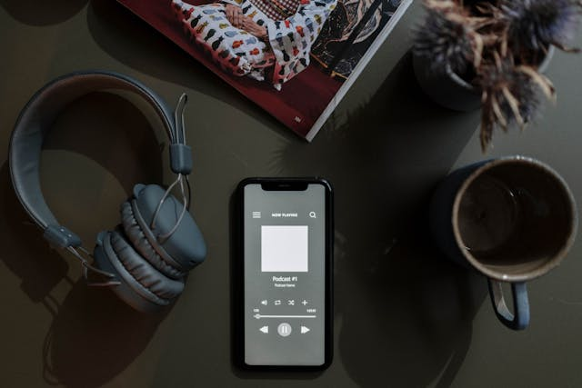
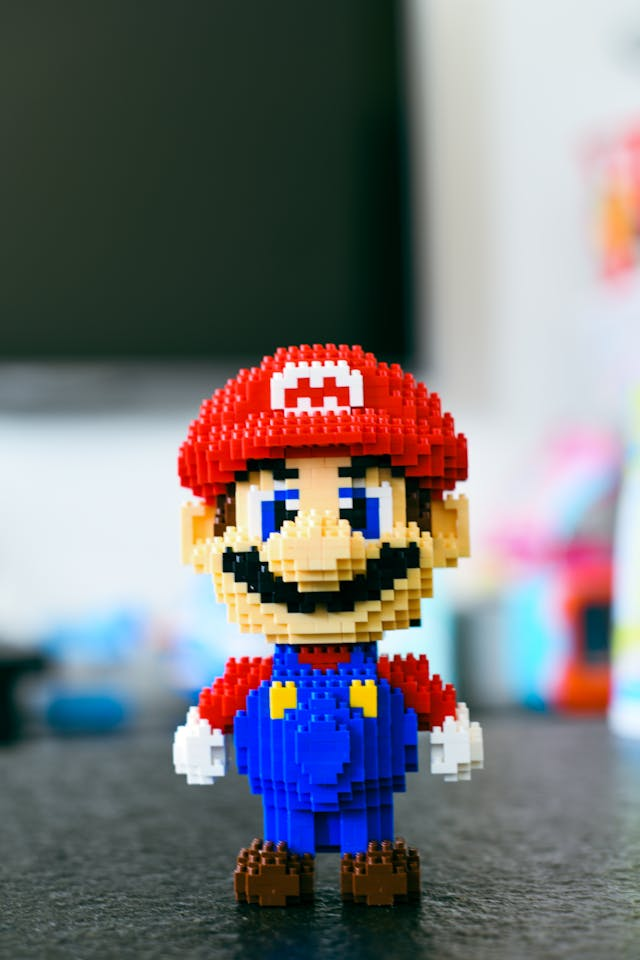

Sobre mi
Me llamo Oswaldo Isai Tobias Torres, tengo 18 años y actualmente me encuentro estudiando la carrera de LTI en 5to semestre. Hoy les hablaré de algunos de mis pasatiempos que realizo, ya sea para divertirme o disfrutarlo haciendolos.
Me llamo Oswaldo Isai Tobias Torres, tengo 18 años y actualmente me encuentro estudiando la carrera de LTI en 5to semestre. Hoy les hablaré de algunos de mis pasatiempos que realizo, ya sea para divertirme o disfrutarlo haciendolos.
En las noches cuando tengo tiempo libre, suelo ver algun tipo de contenido de esto, ahorita estoy viendo Solar Opposities, una serie que me encanta por el humor que maneja.

Cuando hago tarea, voy de camino y regreso a lugares durante el trayecto, o solo para matar tiempo, me gusta poner musica para hacerlo mas llevadero. Principalmente trap, hip-hop y sus derivados, tambien algunos de banda.
Uno de mis pasatiempos que hago con frecuencia es este, ya que cada vez que juega mi equipo de Tigres siempre planeo el día para quedar desocupado a la hora del juego. También cuando tengo tiempo me veo otros partidos que esten interesante como los que se jugaron en el mundial de clubes.
Estas figuras son personajes famosos armables con bloques parecidos a legos, y es muy entretenido estar ahi armandolos, personalmente me gusta mucho armarlos y coleccionarlos, actualmente cuento con 3 figuritas que son bob esponja, hulk y shadow.
